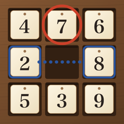

消えないわけが分かるナンバーマッチ
消せない2つを押すと、「あいだに 7 があって、とどきません」と、わけを言う数字パズルです。
9列の盤に並んだ数字から、同じ数か、足して10になる2つを選んで消していきます。よこ・たて・ななめに並び、あいだが空いていれば、はなれていても消せます。行の終わりと次の行の初めもつながります。
- 消えないわけが分かります。消せない2つを押すと、「3 と 5 は、同じ数でも、足して10でもありません」「4 と 6 は足して10ですが、よこの線のあいだに 7 があって、とどきません」と1行で言い、じゃまをしている数字を朱の丸で囲みます
- つながる道が見えます。数字を1つ押すと、組める相手を全部光らせ、つながる道を点線で引きます（行をまたぐ道も）
- いま消せる組の数をいつも出します。0 になったら「足す」で、残りの数字を下に書き足します
- どの面も消し切れます。配る前に、決まった回数の「足す」までで全部消せる手順を計算で見つけてあります。同じ面はいつも同じ盤。ヒントは、消し切れる手順の次の1組を見せます
- ふつうの面（限りなく続きます）・毎日の1面・決まりの練習8問。1手もどす・ヒントは何回でも
- 記録：クリアした面・最高点・毎日の1面のカレンダー
- 登録・課金・通知はありません。記録はこの端末の中だけに保存します。画面のいちばん下に小さな広告が出ます（面の前後に広告をはさまず、画面いっぱいの広告・動画の広告は出しません）